来源：https://q1321o9e8qy.feishu.cn/docx/Vo5YdRA6Po0NThxOyCzcFrMundd
本篇内容拆解大纲如下
1、赛道前景概述
2、小红书产品需求
3、如何在小红书引流
4、产品形式
5、变现分析
6、注意事项
首先先来了解一下这些手作饰品的基本介绍。
雍和宫手串：雍和宫手串有五种寓意。首先，雍和宫香灰琉璃手串象征着“金、木、水、火、土”五行调理和平衡作用。其次，雍和宫香灰琉璃手串代表健康、平安，金色香灰琉璃手串代表招财、财富，绿色香灰琉璃手串代表事业、官运，红色香灰琉璃手串代表姻、招贵人，白色香灰琉璃手串代表智慧、学业。最后，雍和宫香灰琉璃手串还寓意心想事成、紫色招财、深蓝色代表健康。
灵隐十八籽：杭州灵隐寺的十八籽手串，其材质是用十八种树籽做成珠子串成的，材质大致为：红菩提，千叶莲花，蝉宝，麻蝉，蜜瓜，沙腾，凤眼，半圆金线，大金丝，白玉牙，龙眼，太阳籽，球莲花，天意子，瓷金线，花菩提根，金莲子，龙珠等。
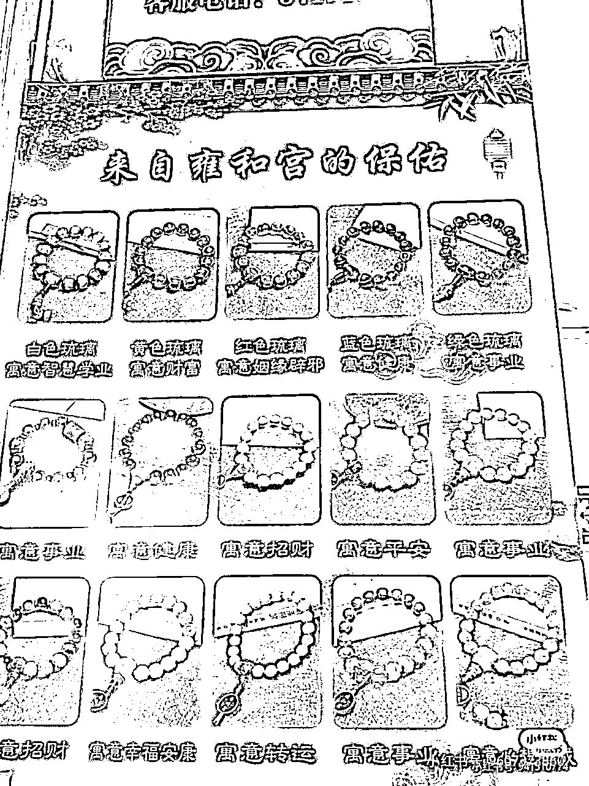
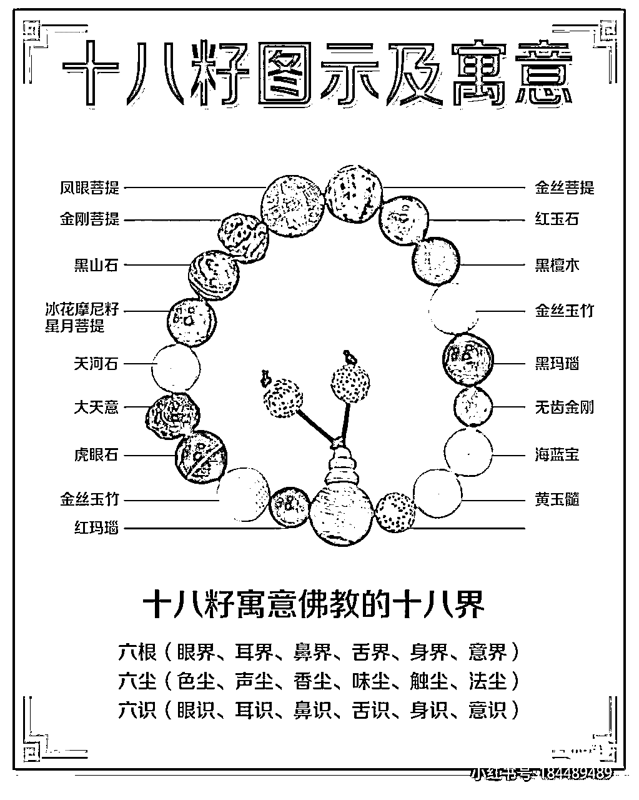
由此可见，这些手串都是一些有寓意和讲究的珠子串成的一个手串。
而这两个产品在小红书上的话题浏览量高达1亿以上。这两个手串是为什么会受到如此高的关注呢？
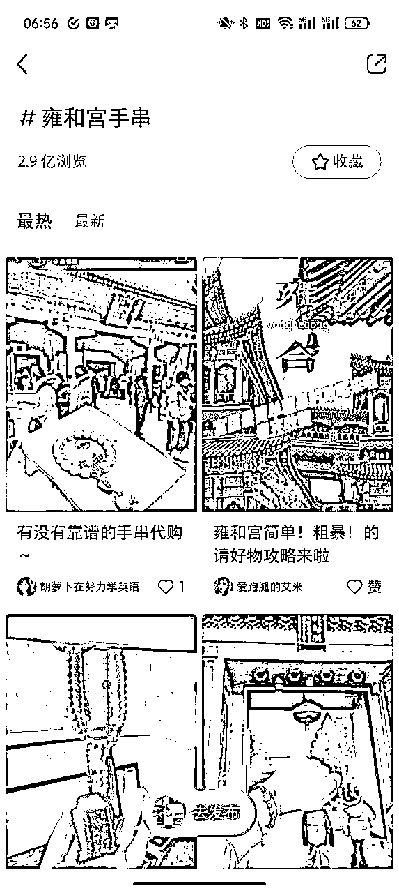
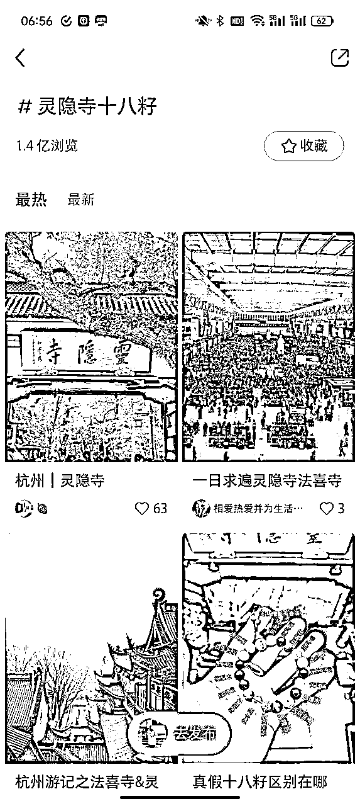
寺庙里面人头攒动，人山人海，根据相关数据显示，从2023年2月份以来，预定寺庙景区门票的人群中，有一半都是90后和00后，和往年的同期相比，订单量增长310%。
学业、事业、财运分别是压在年轻人头上的三座大山，这三大压力让他们选择去寺庙“交付诚意”。
这一代焦虑的年轻人在压力巨大的社会下，选择了玄学保运，把自己的愿望都寄托在了这一个小小手串上。
小红书也出现了很多关于手串的还愿分享，表示带上之后真的对自己的这三座大山有用，具体真假，谁又在乎呢，不过是给自己的一种心理寄托，能满足这一点就已经足够了。
但是现在直接去北京或者杭州请串成本比较高，且排队较久，由此小红书上出现了一些线上跑腿帮请串和一些产品店铺，且销量都很高。
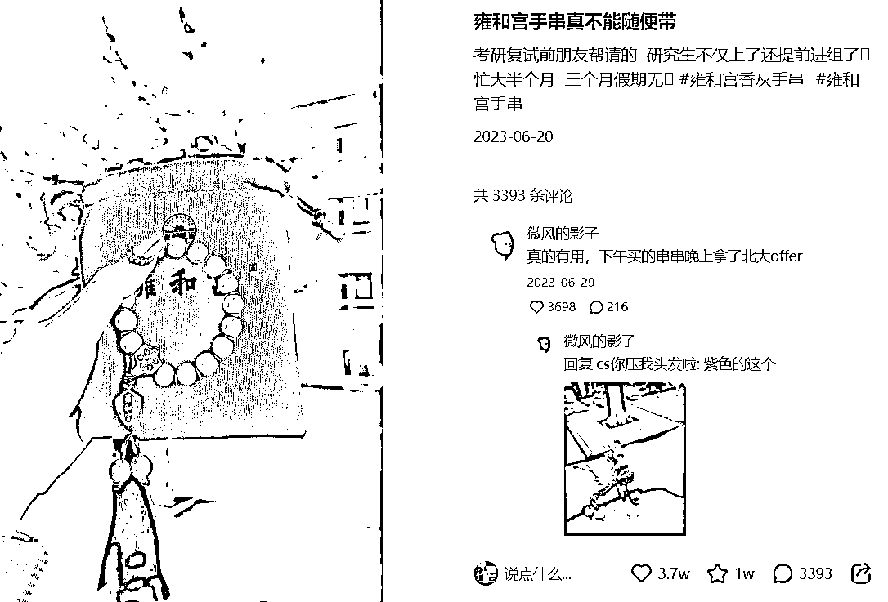
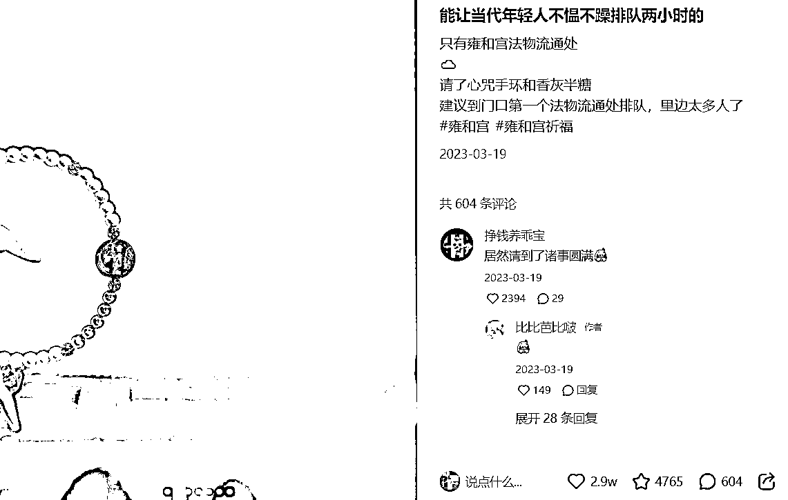
那这些高销量的手串到底是如何引流的呢？
可以看到在小红书商品搜索，灵隐十八籽最高销量1W+，且价格美丽。引流方式直接在小红书开店铺，自己个人简介改为在杭州灵隐周边，分享好看的手串等钩子，吸引消费者进店。
同时，灵隐十八籽在小红书售价越来越便宜，9.9/19.9的销量越来越好，且质量也一样能保证，买到就是已经开过光的，比较方便易得。
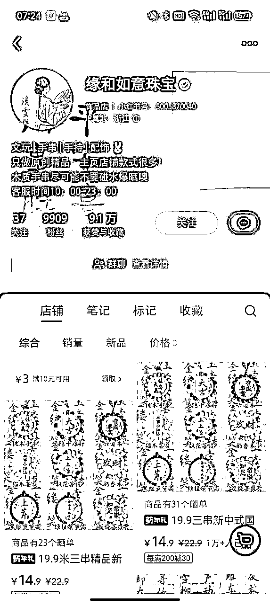
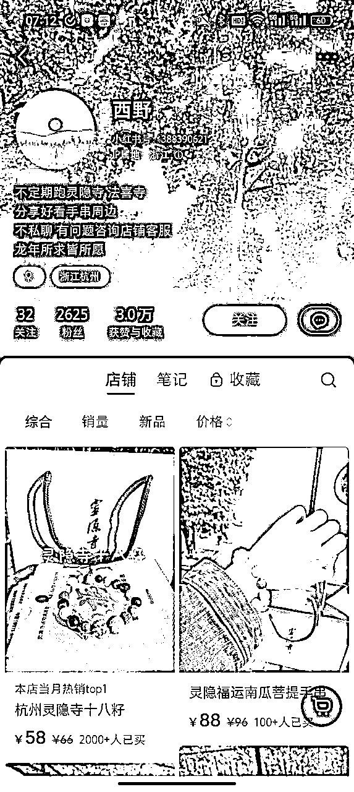
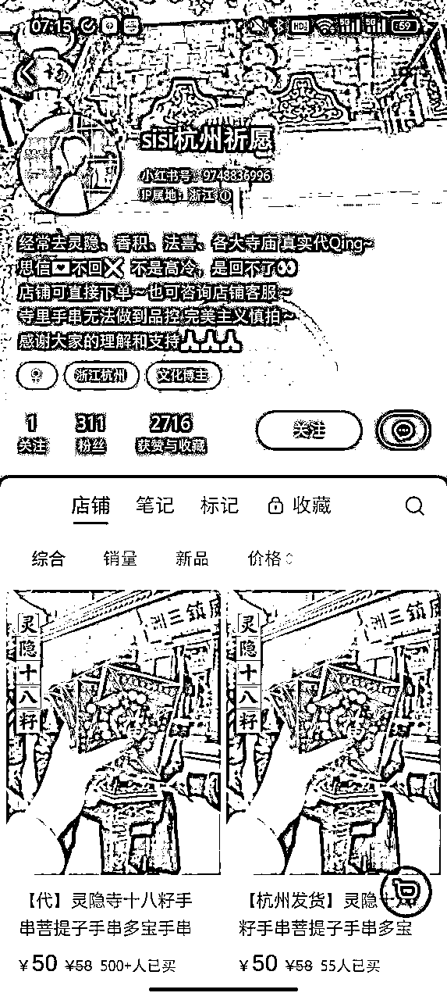
而雍和宫手串目前小红书上无商品直接售卖，发布笔记多为去当地请串攻略以及求代买。价格200-600之间价格不等。但小红书代买行业信任度不高，鱼龙混杂，容易被骗不是真的在当地买的。
消费者更在乎产品的真实性，是否开过光、是否是正品等等，而雍和宫手串在小红书上反馈的还愿更灵一些，且样式更多更好看。
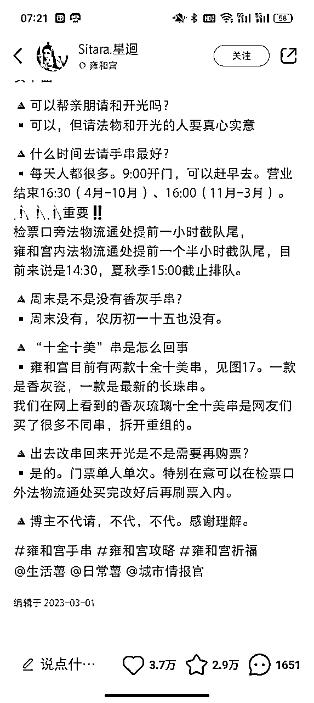
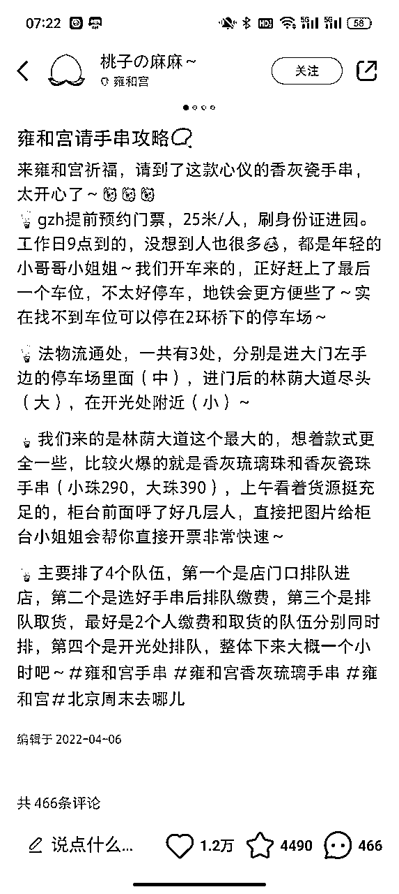
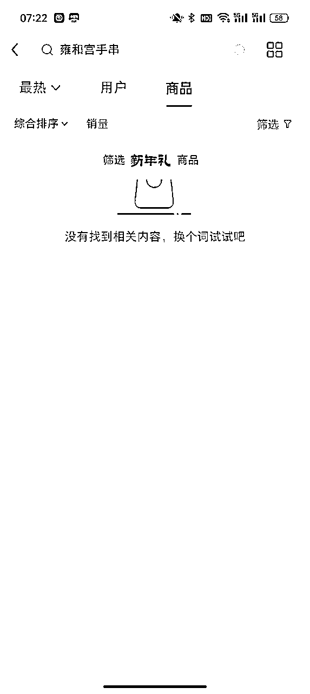
现在小红上十八籽的价格最低9.9最高80-90，雍和宫当场买手串价位200-600左右。
查看了1688，发现十八籽价格一块多到2块多一串，雍和宫手串9.9-50不等。
可见目前的进货成本还是很低的，小红书十八籽售卖利润单价最低7元，1000个销量就是7000。
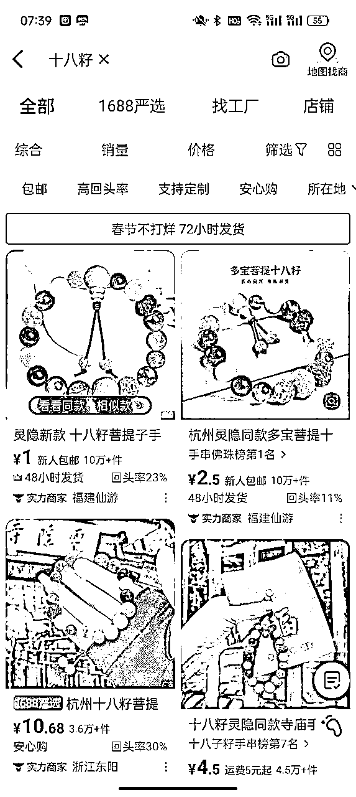
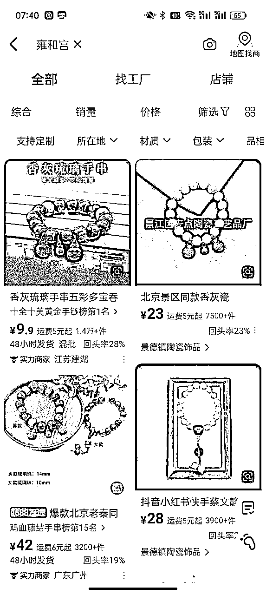
虽然这两个手串在小红书关注较多，但随着大量的代请加入，市场也更鱼龙混杂，消费者更加关注产品是否是正品，是否开过光，品质怎么样等等，所以个人认为，如果想在小红书上做这个，首先需要天然的地理优势，且如何让消费者感到是正品这件事比较难搞，需要经验。